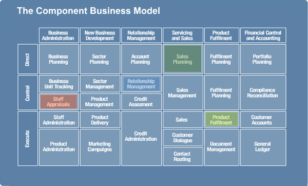
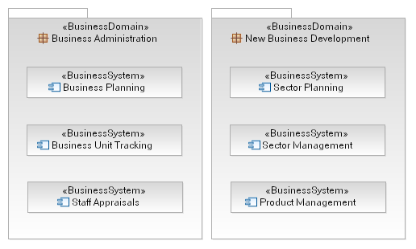
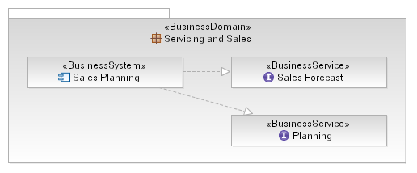

| Концепция: Component Business Modeling |
 |
|
| Связанные элементы |
|---|
IntroductionThis concept describes how to use modeling tools and techniques common in software development and other engineering disciplines to the modeling of businesses. The approach described here is based upon the Component Business Model (CBM) developed and used by IBM Global Business Services, however the question of how to integrate such a model with more traditional business models leads us to present this guidance. This topic draws heavily upon existing guidance in the RUP Business Modeling plug-in and as such demonstrates that there are more similarities between these two methods than there are differences, albeit that CBM models are often used for different decision making than a RUP business model would be. Specifically the following topics should be reviewed by the reader.
The Component Business ModelThe most commonly described work product resulting from a CBM engagement is the component map. A typical CBM component map is presented below (taken from the web resource "A component-based approach to strategic change"). As you can see the business components are arranged in a grid form, categorized by their competency area (sometimes termed business functional area or domain area) and their action. The value in this map is not simply that the business may be viewed as a set of components but that the analysis of the business carefully produces the set of components and describes their dependencies and interactions. The following descriptions are taken from the discussion on CBM found on IBM's web site.
 So, the notion of a business component is very important and should be defined in a little more detail before we move on to look at the parallel between CBM and RUP business modeling. Each business component identifies a basic building block of your business, comprising:
The business component also provides (and depends upon) one or more services to the business, these services are supported by the people, process and technology within a business component. Modeling ProcessWhile the component map is the most visible artifact (certainly in the published materials) produced by CBM, there is a lot more to the model than this picture. For example, "enterprise processes" are described as processes that are owned by the business itself and usually customer facing in some manner. These processes are implemented as a choreography of the services provided by the business components. However, it is also the case that a business component has processes within it, either implementing the services it provides to the business, or potentially management processes of its own. This is also described in the topic Guideline: Business System using the analogy of business systems and business use cases. Using RUP Business Modeling
As a start, we outline in the table below a mapping from the concepts of CBM introduced above to the work
products in the current RUP Business Modeling discipline.
* - This element does not exist in the current UML Profile for Business Modeling (see The figure below demonstrates how this mapping can be achieved in UML (using Rational Software Modeler) using the profile elements listed in the table above. Note that the business competencies contain the business systems which does ensure that a component cannot appear in multiple competencies. In terms of the actions (rows in the CBM map above) we have not included any particular organizational element in the model below, but it seems reasonable to add a property to the business system to capture this information.

Having identified a set of business components/systems, we want to go on and define the services that these components
provide (and depend upon). Again, this is described in some detail in Guideline:
Business System, however it describes the provided/required functionality as "capabilities". So to recap let's look
at an example; the figure below shows a business component/system which provides two distinct services, modeled as
interfaces and realized by the component. This allows us to not only model the services, but if required to even model
the business functions on each service. Modeling the dependencies between services in this way is reasonably
straightforward and produces a structural model which is almost identical to the CBM map above.
 Modeling ProcessesIn terms of modeling process in UML, the RUP describes the use of Artifact: Business Use Case to capture process descriptions with the Artifact: Business Use-Case Realization detailed implementation flows. With respect to the separation of enterprise processes from component processes described in CBM, we see very similar guidance already in the Guideline: Business System where business use cases are described as cutting across business systems as well as potentially being owned by a business system. Links
|

© Copyright IBM Corp. 1987, 2006. Все права защищены.. |